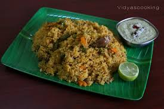

Palav
Steps To Follow
- Rinse 1 cup of basmati rice thoroughly in cold water. Soak it for 15-20 minutes, then drain the water.
- Heat 2 tbsp oil or ghee in a large pot or pressure cooker.
- Add cumin seeds and whole spices (bay leaves, cinnamon, cloves, cardamom, and peppercorns). Sauté until fragrant.
- Add 1 medium thinly sliced onion and sauté until golden brown.
- Add 1-2 slit green chilies and 1 tsp ginger-garlic paste. Sauté for a minute until the raw smell disappears.
- Add 1/2 cup of mixed vegetables (carrot, beans, peas, potatoes) and sauté for 2-3 minutes.
- Add 1/2 tsp turmeric powder, 1/2 tsp red chili powder, and salt to taste. Stir well.
- Add the soaked and drained rice to the pot. Gently stir to mix the rice with the spices and vegetables.
- Add 2 cups of water and mix. You can add a little coconut milk (1 tbsp) for extra flavor and richness (optional).
- In a pot, bring the mixture to a boil, then reduce the heat to low. Cover and cook for 10-15 minutes, or until the rice is tender and the water is absorbed. If using a pressure cooker, cook for 1 whistle on medium heat.
- Once cooked, gently fluff the rice with a fork to separate the grains. Garnish with fresh coriander leaves.
- Serve hot with coconut chutney, raita, or a side of pickles.